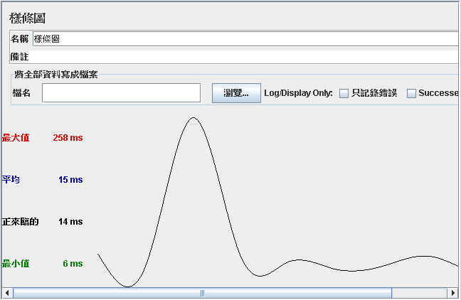

- 取樣的編號（No of Samples）
- 最近的取樣（Lasted Sample）
顯示最近一次的取樣，取得回應的時間，單位是毫秒。
- 平均（Average）
所有取樣時間的加總再除以取樣次數，例如取樣時間若為400、680、500、350，則平均為 ( 400+680+500+350 ) / 4 = 482.5。
- 變異差（Deviation）
- 處理量（Throughout）
每分鐘處理的取樣數。
- 中間值（Median, midway value）
一系列數字的中間那個數字，以上例而言，所有的取樣時間排序後，最中間那個取樣時間為656，注意，中間值不是平均值。
再以下圖為例：

大部份數據與之前解釋相同，其中：
- 90%直線（90% Line）
如果把回應時間由小到大排列，那麼90%的時間是包括在這個範圍內，即相當於90%的使用者所得到的回應時間。
- 最小值（Min）
取樣時間最小值。
- 最大值（Max）
取樣時間的最大值。
- 錯誤率（Error）
請求錯誤的百分比。
- 處理量（Throughput）
每秒鐘的取樣數。
- 每秒千位元組（KB/sec）
這不用解釋了吧。
在接聽中，還有一個條樣圖（Spline Visualizer），可以用曲線圖形化表示所有的取樣分佈：

圖形中的曲線用了10個點，每個點用了10%的取樣數之平均，構成多項式曲線以讓您觀察取樣分佈。